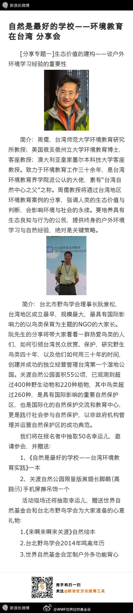

目前信赖也是很稀缺的东西。获得稀缺东西的方法都值得收集下，比如这条对治疗方案的理解。@龚晓明医生:对患者利益至上最好的理解就是假设你自己是病人或者病人是你亲人的时候，你是否愿意接受这样的一种治疗方案。以患者利益至上，你会获得患者的信赖。这个年代，可以获得患者的信赖，是件幸福的事情。
@艾莉森-美语之舟@WWF世界自然基金会:【自然是最好的学校】下周五，来北京聆听台湾自然保护的故事！台湾师范大学环境教育研究所教授、“台湾自然中心之父”周儒，台北市野鸟学会理事长阮景松将和大家分享台湾在环境教育、鸟类保育等方面的故事和经验，到场者均有小礼物赠送，现场还有抽奖环节欢迎大家私信姓名职业电话报名！ 